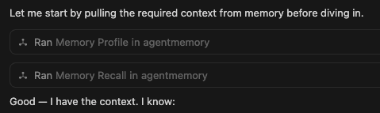

Open source · MCP · Self-hosted
Your agent forgets everything between sessions. agentmemory.md gives it a brain — decisions, context, goals, and learnings that persist forever.

Every session starts from zero. You repeat yourself. The agent re-asks. Nothing sticks.
Re-explaining the same project context at the start of every conversation
Re-making decisions you already settled — "should we use Redis or Postgres?"
Agent suggesting approaches you already tried and rejected, without knowing why
Structured memory across every dimension of your work.
Past decisions with rationale, project stack, failed experiments and their root causes, deployment workflows and gotchas.
Stakeholders, customers, collaborators — who owns what, what customers have said, feedback linked to products.
Goals, initiatives, and tasks tracked across sessions. The agent picks up exactly where you left off.
Coding style, tooling preferences, anti-patterns, reusable workflows — per-project or global.
Under the hood
Run on any Linux box — a VPS, homelab server, or Proxmox LXC. One command starts everything.
docker compose up -dInstall Tailscale on your server and laptop. Your server gets a stable private IP (100.x.x.x). No port forwarding, no firewall rules — Tailscale encrypts everything at the network layer.
# Install and bring up Tailscale
curl -fsSL https://tailscale.com/install.sh | sh
sudo tailscale up
# Expose agentmemory to your tailnet (runs in background)
tailscale serve --bg --tcp 8081 tcp://localhost:8081tailscale serve --tcp binds port 8081 on your Tailscale IP so only devices in your tailnet can reach it — no firewall rules needed. The service stays running after you close the terminal.
Point Cursor, Claude Desktop, or any MCP-compatible agent at your server's Tailscale IP. Plain HTTP is safe — Tailscale handles encryption.
{
"mcpServers": {
"agentmemory": {
"url": "http://100.x.x.x:8081/mcp"
}
}
}Port 8081 is used in this example. Avoid ports already in use on your server — common conflicts: 8006 (Proxmox), 3000, 8080. You can change the port in docker-compose.yml.
Your agent now stores decisions, recalls context, tracks goals, and picks up exactly where you left off — across every session and every tool.
Runs comfortably on a small VPS or homelab node.
Not every memory is equal. agentmemory.md scores each node by recency, importance, and graph proximity — so the right context surfaces first.
Scoring formula: similarity × 0.80 + graph_boost × 0.15 + recency × 0.05 — weighted toward what matters right now.
Simple flat-file memory works well for a single small project. Here's the honest comparison.
Use a flat file when you have one project, short memory, and don't want infrastructure.
Use agentmemory.md when you have multiple projects, growing history, or want structured goal and task tracking.
Open source. Your data stays on your server. Full control over every component.
Zero infrastructure. We run the server, handle updates, and keep your memory available everywhere.